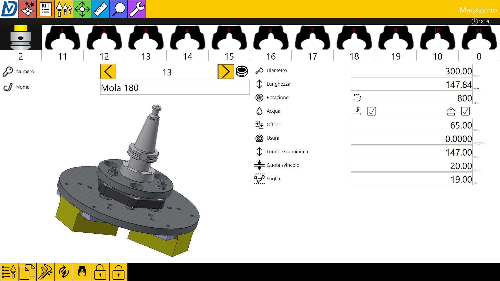
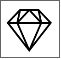
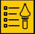
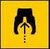
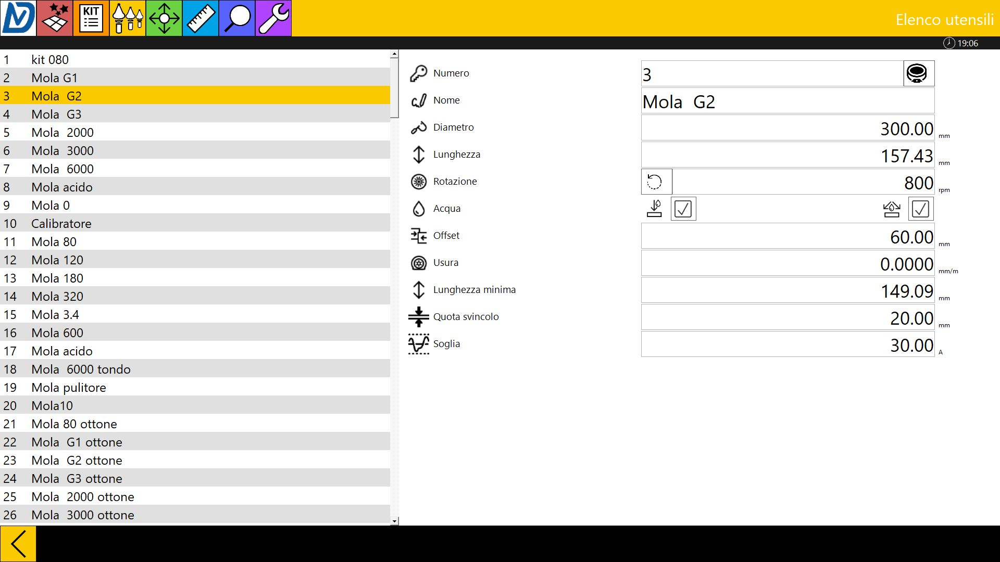
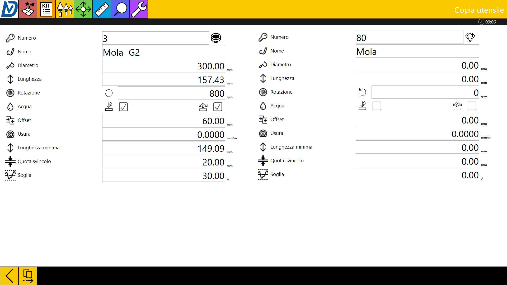

La pagina consente la gestione del magazzino fisico e dei dati di tutti gli utensili.
Nella parte in alto è schematizzata la rastrelliera porta utensili, con la possibilità di impostare il numero dell’utensile sistemato nella relativa posizione.
La prima casella indica invece il numero dell’utensile installato sul mandrino della macchina.

Il software può gestire fino a 100 utensili. Ogni utensile è contraddistinto da nome e numero che lo indentifica univocamente. Gli stessi utensili sono divisi in due macrocategorie: lucidanti e diamantati
 | Simbolo di utensile lucidante |
 | Simbolo di utensile diamantato |
Parametri
Indichiamo di seguito le caratteristiche degli utensili:
Nome | stringa alfanumerica utile per identificarlo. |
Numero | intero univoco che lo identifica anche sul controllo numerico. |
Tipologia | diamantato o lucidante. |
Diametro | diametro dell’utensile. |
Lunghezza | Lunghezza misurata da naso mandrino a punta utensile. |
Rotazione | velocità di rotazione espressa in giri al minuto. Verificare attentamente il valore impostato per ridurre i rischi. |
Acqua | indica se durante la lavorazione con questo utensile verrà attivata o meno l’acqua (acqua interna o esterna). |
Offset | parte di utensile che può uscire dalla sagoma del pezzo. Se messo a zero l’utensile rimane interamente dentro la sagoma. |
Usura | espressa in mm/metro lavorato serve per compensare forti usure dell’abrasivo. |
Lunghezza minima | lunghezza sotto la quale la lavorazione dà allarme per evitare di rovinare il materiale. |
Quota svincolo | altezza utilizzata per gli spostamenti in rapido fra un pezzo e l’altro e per avvicinarsi al pezzo prima di accendere l’utensile. |
Soglia | espressa in Ampere indica il limite di consumo del mandrino oltre il quale interviene la protezione software. |
Nella parte bassa della pagina sono presenti i pulsanti per interagire con la macchina.
 | Elenco utensili |
Copia utensile | |
 | Tasta utensile |
Cambia utensile montato | |
 | Scarica utensile |
Apri pinza utensile | |
Chiudi pinza utensile |
Elenco utensili
Nella pagina è visibile la lista completa di tutti gli utensili. Selezionando l’utensile, sulla destra è possibile visualizzare e modificare i dati dello stesso.

Copia utensile
Permette di copiare i dati da un utensile all’altro in modo da velocizzare la creazione di nuovi utensili.

Selezionare nella parte sinistra l’utensile “sorgente” da cui copiare i dati, selezionare nella parte destra l’utensile “destinatario” in cui copiare in dati e poi premere il pulsante sotto.
Duplica utensile |